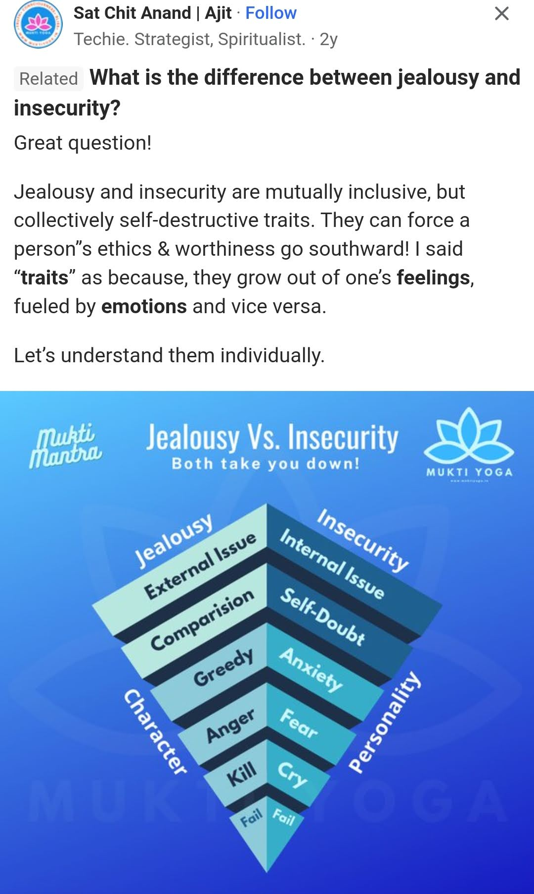
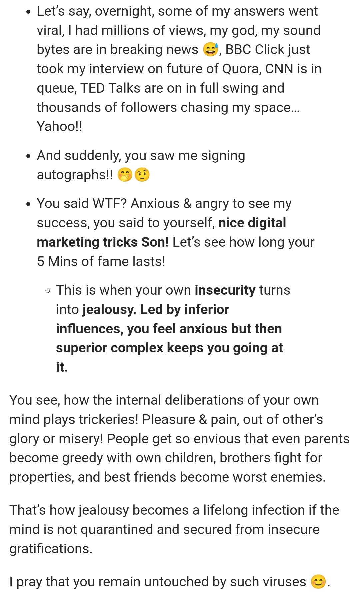
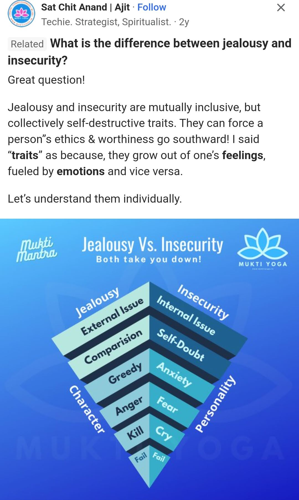
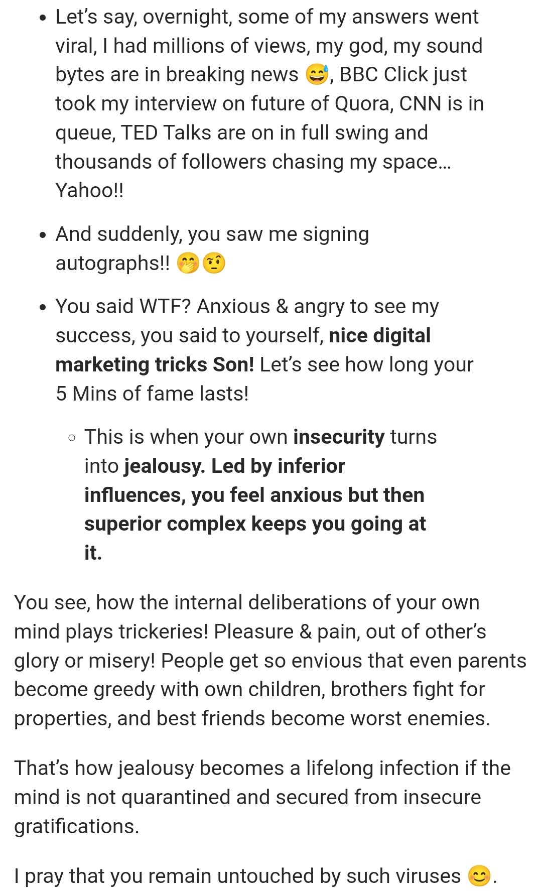

English Translation of "Husn"
Look, look, what kind of things are here
They are with me while not being with me
Is it that easy?
Look, look, as if my intentions
Were the same as yours
Yeah, how naive I am
Ask for my heart someday instead of my beauty
Oh, I'll melt away in a moment, yeah
Now don't do that, my heart won't be able to mend itself again
Your words make me fall apart, yeah
I admit that the world is crazy for you
Maybe that's why you didn't realise
That I'm enough for you
Look, look, tired of this world
Why do you come here pretending to be innocent?
What even am I to you? (Yeah)
Then why do you come here wanting to make me cry?
If you have come, then please stay
And please ask anything about my day
Only your presence is enough for me, yeah
Yeah, if one day anyone
Ever reads your story
I don't think that my name
Would be mentioned anywhere in it
Yeah, I'm here
Look into my eyes, into my eyes
Look at how my heart is
Even words can't describe it
Look into my eyes, into my eyes
What kind of luck I have
That you're here while not being with me
Look into my eyes, into my eyes
Your incomplete loyalty
Is all I ask for, I won't ask for anything else
Look into my eyes, into my eyes
Look, look, what kind of fate we have
Still can't have you despite wanting you
I'm not even part of this race
Look, look, what kind of things are here
I even look at the words around here
I don't even belong here
The lyrics of this song often make me cry, how much I can relate to it. Both the video and the song struck such a chord down there. That ballerina describes me so accurately.
The three stanzas-
I admit that the world is crazy for you
Maybe that's why you didn't realise
That I'm enough for you
Look, look, tired of this world
Why do you come here pretending to be innocent?
What even am I to you? (Yeah)
Then why do you come here wanting to make me cry?
If you have come, then please stay
And please ask anything about my day
Only your presence is enough for me, yeah
Yeah, if one day anyone
Ever reads your story
I don't think that my name
Would be mentioned anywhere in it
God forbid, Anuv Jain made a song that describes me so well. I had been warned to not take you seriously right from the beginning, still I chose to fall madly in love with you, believing in you. You came with your innocent face but you too knew innocence was missing.
After 1st April's discovery I realised what you meant by "I thought you were offended because I sent just two pics with no text" on Feb 14. My innocent heart couldn't comprehend but you yourself knew what you meant.
I took no precedence for you, I innocently thought it's just being busy but when the shock of the flight came I realised that indeed I don't take any precedence, too shy to land a call with me but brave enough to land a trip with a complete stranger axaxaxa. More like laughter of tears and disbelief.
"I admit that the world is crazy for you
Maybe that's why you didn't realise
That I'm enough for you"
Sometimes I felt it like anything, in a world full of men reaching out to women, when one is down in the dumps everything falters.
In India there's a saying,
"The rule of the world is 28 years old men losing their love of 5 years to some 33 years old dude in a much better position, only for him to 5 years later become that 33 yo dude taking away another 28 years old's love of 5 years."
When I told this to Abdulov, we laughed a lot on this. What else can be done other than laughing out at such things?
Sometimes I wish I never ever fell for this thing called love. Loving inanimate objects is much easier than loving humans, their hearts may not sway after all. Sometimes when I am reading Kafka's Metamorphosis, the heart aches. It's on pause because it turned out too painful for me.
His life? Another tragedy in itself.
Why Buddha chose to make the supreme sacrifice to liberate the world becomes more and more evident day by day.
How many outbursts I had by now? I have lost the count. I who find it hard to speak up, have been trying my best to share my worries, only for all to have fallen on your deaf ears. You chose to address emotions but never the details on your end.
This time I really wanted to turn around a leaf, I addressed my concerns. I saw you and Ksenia became friends, I am happy for that but my anxiety kicked in and thought you will once again ignore me asking for things which involve details. That's why I decided to write a reminder. Then the thought you may get annoyed or take it in a bad way began tormenting me, "Is it really such a sin for me to ask when I never hide anything?"
I became anxious and started typing out everything to Ksenia in hopes she'd convey them to you now that you two know each other. I'm frightened by the idea that if I say things myself, everything will fall on deaf ears. This moment I don't fear things to sound bitter, all I fear is the dreaded silence. Keeping silent might be more comfortable for you than blurting out but I... I will hate you if you do so.
I really want to be patient but all the time I kept waiting made me only to see you not caring has killed my patience.
I believe in your goodwill and will to build things all over again but I can't help but vomit all the poison from the past that has been there in me The sensation that didn't let me sleep was frightening, it felt as if it wants me to blurt out all there is in me.
Yes, I am selfish, I want to have you all for myself. I want to have you see me for who I am, including things that unsettle you. I want to be a priority. I want to feel special.
I have no resources, still I try doing my best to make you feel special.
You... you made me feel special many times, even this time when you printed out my picture and pasted it, I felt very special.
But da, I must say, I want to feel that way more often. I feel special when you reach out for me, bare yourself. Like the day you shared your music tastes.
You keep on saying all but me know barely about the inner you, but hasn't it been long since you bared that to me?
I don't like reading between words, you often turn hard to understand because it seems you have some misery with words axaxaxa. That's why I say if you want type in Russian but be clearer.
See, in bengali we have a saying, "Pora bhalo lagena, bhalo laagate hoy" It means Nobody naturally likes to study, it is made to be liked.
Many things don't come naturally, but once it becomes a habit, it becomes natural. Like the way I insert da and axaxaxa everywhere. It started because I tried to use at least a couple of russian words when with you and it sneaked in.
Is it too much to ask the work place revolutionary to come and start a revolution in my heart as well? To overthrow this sense of being unwanted and reestablish the rule of feeling wanted by my love?
Even if it takes force, I'd say force yourself to start taking initiatives. Love should happen naturally and it did. But now that I feel this way shattered, unable to do anything anymore. I want you to do it. Take some responsibility.
I don't enjoy seeing you flirting back. I want you to know that I AM ENOUGH.
I know it feels enjoyable to be flirted with and yes I'd use the word FLIRTED because as adults we're not innocent enough to not know what is flirting.
I maybe however much unsightly in this state but I'd still rather have you block me out from life than choosing to live for false dreams. And I'd keep on pushing for acceptance from you.
I am done up with all the farce of me being able to accept this breakup idea and so on. This whole time I wasn't there just to feel being tossed away when I had lost it. No, I don't want to feel this way.
A single action speaks louder than a thousand words.
I choose to vomit whatever poison has seeped in my mind over time. The poison has affected already, but it's still not too late to administer the anti dote and that's why I request you to tell everything that has so far been on your mind. I refuse to believe there really is nothing you have to tell, take a couple of days looking at the calenders and going through your chats if necessary. Da, don't make me wait long just because the words maybe unpleasant for me to hear. Time is of the essence, however busy your schedule maybe, make this into a priority.
And yes, don't cover vaguely, I have already said, choose the language of your comfort but I want a really elaborate answer. However hard it may feel, it is completely possible and I am not going to have a no for an answer.
My self esteem fell so much because I felt all this time that everything has been my fault, I can't express how badly it reflected on me. Every few couple of days taste gone, weight loss, shaky hands and legs, palpitations, on verge of vomiting several times. It has reflected physically on me just not mentally.
So I request you to go to the core of the issue and clear your heart out.
I know that you can! My heart maybe small but I forgive if my heart feels being honest enough. No, I don't want you to start saying you've been a negative character and such. If it helps you relieve, that is fine to say but I want narrations of events.
There is both devil and divine in us, accepting that devil is the way to help the divine in us.
If for naught, do it for me please. It'll help me relieve at least. Someday you too might be in my position.
Women post pregnancy have swollen chests, postpartum depression and so on, they become too conscious of themselves and start suspecting every act of the husband. That phase is very hard, most problems in marital families arise from there.
God forbid but what if that day comes for you? I really didn't want to say this but it is important for people to fear karma. The fear of God holds society together and karma keeps acts together.
I want to quit this life of despair and anxiety and I need your help for that, because not addressing the past keeps bringing trauma for me. Tell by when you want to address these things, I trust you and want to do that more than ever. You give the date by when you would be addressing.
I am saying things in very raw and unpleasant manner but if I actually didn't care, I wouldn't have bothered even.
I wanted to word things much better but I hope you would understand where I am coming from, you too have been there afterall.
Thank you my love for reading this so far.
 


